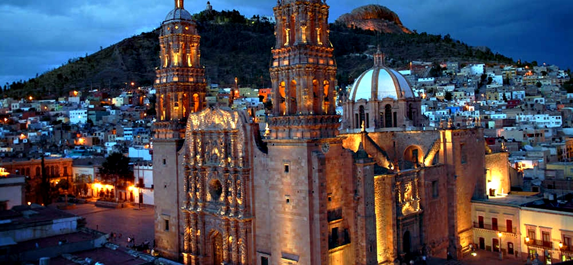

Zacatecas es un estado situado en el centro-norte de México, conocido por su rica historia minera y su impresionante arquitectura colonial. Su capital, Zacatecas, es una ciudad histórica que fue un importante centro minero durante la época colonial, y ha sido reconocida como Patrimonio de la Humanidad por la UNESCO debido a su bien conservado casco histórico y su arquitectura barroca. El estado cuenta con una geografía diversa que incluye montañas, llanuras y áreas desérticas. Zacatecas es también un importante centro cultural y económico, con una economía basada en la minería, la agricultura, y el turismo.
Una de las principales tradiciones en Zacatecas es la celebración de la Feria Nacional de Zacatecas, un evento anual que tiene lugar en el mes de septiembre. La feria incluye conciertos, espectáculos, eventos culturales y actividades para toda la familia. Otra tradición destacada es el Festival Cultural de Zacatecas, que se celebra en los meses de abril y mayo y ofrece una variedad de eventos artísticos, como teatro, danza y música. Además, la Semana Santa en Zacatecas es conocida por sus procesiones y representaciones religiosas, que atraen a numerosos visitantes y reflejan la rica herencia religiosa de la región.
La gastronomía de Zacatecas es variada y refleja la influencia de la cocina tradicional mexicana. Uno de los platillos más representativos es el asado de boda, un guiso de carne de cerdo cocido con chiles secos y especias, que se sirve en ocasiones especiales. Otro platillo característico es el tacos de barbacoa, carne de res cocida a fuego lento y servida en tortillas de maíz con salsas y guarniciones. También es notable el gorditas de chicharrón prensado, tortillas gruesas rellenas de chicharrón prensado y acompañadas con salsas y vegetales.
| Dato de interés | Dato de interés | Dato de interés |
|---|---|---|
| Zacatecas es famosa por su Catedral de Zacatecas, una obra maestra del barroco mexicano construida en el siglo XVIII. La catedral es un importante símbolo de la riqueza histórica y arquitectónica del estado. | El estado alberga el Museo Rafael Coronel, que cuenta con una de las colecciones más grandes de máscaras mexicanas y arte popular. El museo está ubicado en un antiguo convento y es un importante centro cultural en Zacatecas. | Zacatecas es conocida por su teleférico, uno de los pocos en México, que ofrece impresionantes vistas panorámicas de la ciudad y sus alrededores. El teleférico es una atracción turística popular que permite a los visitantes disfrutar de vistas únicas del paisaje montañoso y la arquitectura colonial de Zacatecas. |